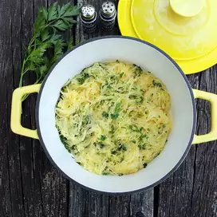

Easy recipe for a simple spaghetti squash that goes great with anything!

Ingredients
2 servings
1 small spaghetti squash, halved and seeded
2 and 1/2 tablespoons butter
1/2 tablespoon chopped fresh chervil
1/2 tablespoon chopped fresh basil
1/2 tablespoon chopped fresh parsley
1/2 tablespoon chopped fresh sage
1/2 tablespoon chopped fresh chives
1/2 teaspoon salt
1/8 teaspoon freshly ground black pepper
Preparation Steps
Preheat the oven to 375 degrees F (190 degrees C).
Place spaghetti squash halves cut-sides down in a baking dish
and add enough water to come 1/2-inch up the sides of the baking dish.
Bake in the preheated oven until the squash can easily be pierced
with a sharp knife, about 45 minutes.
Turn squash over, cover with foil again, and continue to cook until
the squash is very tender, about 15 more minutes.
Remove from the oven, uncover, and allow to cool slightly.
Using a fork, gently pull the strands of squash away from the peel
and place into a bowl.
Melt butter in a skillet over medium heat.
Add spaghetti squash strands, chervil, basil,
parsley, sage, chives, salt, and pepper and cook until
flavors are combined and heated through, 2 to 3 minutes.